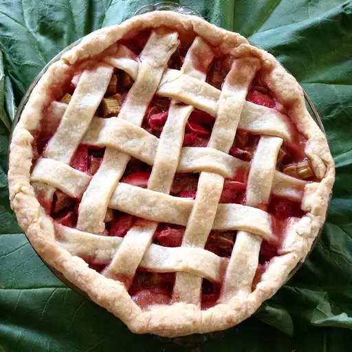

Renee's Strawberry Rhubarb Pie

Ingredients
- 2 tablespoons cornstarch
- 1 tablespoon water
- 2 ½ cups diced rhubarb
- 2 ½ cups sliced fresh strawberries
- 1 ¼ cups white sugar
- ½ teaspoon lemon juice
- ¾ teaspoon ground cinnamon
- 1 teaspoon vanilla extract
- 1 (14.1 ounce) package double-crust pie pastry, thawed
- 1 egg white
- 1 teaspoon water
- 1 tablespoon turbinado sugar (such as Sugar in the Raw)
Directions
- Whisk cornstarch with 1 tablespoon of water together until thoroughly combined. Stir in rhubarb, strawberries, white sugar, lemon juice, cinnamon, and vanilla extract. Allow mixture to stand for 30 minutes.
- Preheat the oven to 425 degrees F (220 degrees C). Arrange bottom crust into a 9-inch pie dish. Roll the remaining crust out into a 10-inch circle on a floured work surface, and set aside.
- Stir the filling, and pour into the prepared pie dish. Cut the remaining crust into 1-inch wide strips (use a scalloped edge pastry cutter for a prettier crust). Moisten the rim of the filled bottom crust with a bit of water, and lay the two longest strips in a cross in the middle of the pie. Working from the next longest down to the shortest strips, alternate horizontal and vertical strips, weaving the strips as you go. Press the lattice strips down onto the bottom crust edge to seal, and trim the top crust strips neatly. Beat the egg white with 1 teaspoon of water in a small bowl, and brush the entire lattice top with the beaten egg white. Sprinkle with turbinado sugar. Wrap aluminum foil strips around the edges of the pie.
- Bake in the preheated oven for 15 minutes; reduce heat to 375 degrees F (190 degrees C), and bake until the crust is browned and the filling is bubbling, 40 to 45 more minutes. Remove aluminum foil for the last 10 minutes of baking time. Allow pie to cool completely before serving.
Nutrition Facts
391 Calories
15g Fat
61 g Carbs
4g Protein